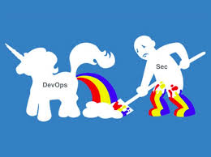

- Questions: @caffeinatedEng
- Slides: https://mattyjones.github.io/keep_it_low/
Ansible and Pagerduty
The Good, The Bad, The I'm Screwed
whoami

I am an operational tool and infrastructure engineer that has mild OCD and hates doing things twice.
Common Terms
immutable
configuration management
orchestration
framework
What's Wrong With This Picture
Let's Go Shopping
Pagerduty?
Hint:
Ansible?
Hint:
Puppet?
Hint:
Chef?
Hint:
Why Ansible?
Scope
manage user contact info
manage team membership
Definition Of Done
repo for storing info
documentation for project
running project
The Code
Pagerduty Teams
Create, Update, Remove Teams
Add and Remove Users
Pagerduty Users
Create, Update, Remove Users
Pagerduty Contact Methods
Create, Update, Delete Contact Methods
Problems
existing pagerduty modules
learning how to do this properly
contact info api was hard to work with
Refactor..Refactor
too many api calls
wanted to store users like inventory in json
proper error handling
proper exit codes
The Good
wrote Python again after Ruby and Golang
learned about Ansible at a low level
learned a lot about my boss (all good)
learned about immutable infrastructure from a new perspective
The Bad
took longer than I thought
required too much refactoring
mgmt expectations vs what was possible in reality
had to be careful not to over sell skillset or product
WTF
legal..patents..GPLv3..Oh My!
who owns this, who fixes this, why build this
security loves their secrets
Take Away
don't be afraid to fail fast and pivot
plan before coding
know your customer
dont be afraid to over sell yourself in a calculated way to get the project you want
Questions?
- Slack: Lowell Tech Workers
- Twitter: @CaffeinatedEng
- Github: mattyjones
- Meetup: Lowell Tech Workers
- Salesforce is hiring